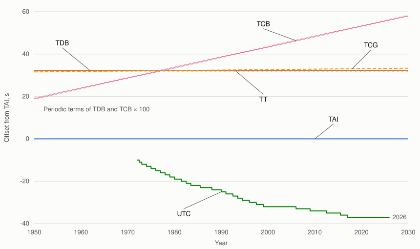
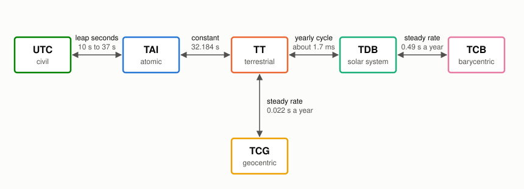

AstroEpochs
AstroEpochs represents astronomical epochs and converts between six time scales: TAI, TT, UTC, TDB, TCB, and TCG. Its Time type stores a Julian date in two parts and supports Julian dates, Modified Julian Dates, and calendar timestamps. The package manages a cached leap-second table for UTC conversions. Other Epicycle packages, including AstroFrames, AstroProp, and AstroSolve, use Time to represent epochs.
The API is inspired by Astropy's Time, with algorithms adapted from ERFA and Astropy. The test suite compares its results with Astropy reference data.
Quick Start
The example below creates a time from a UTC timestamp, converts it to other scales, and moves it forward by 60 elapsed seconds.
using AstroEpochs
# Create from a UTC timestamp
t = Time("2017-01-01T00:00:00", UTC(), ISOT())
# Convert to other scales
t.tai.isot # "2017-01-01T00:00:37.000"
t.tt.isot # "2017-01-01T00:01:09.184"
# Advance by 60 elapsed seconds, then return to UTC
later = (t.tai + 60 / 86400).utc
later.isot # "2017-01-01T00:01:00.000"A time displays its value, scale and format at the REPL:
julia> Time("2017-01-01T00:00:00", UTC(), ISOT())
AstroEpochs.Time
value = 2017-01-01T00:00:00.000
scale = UTC()
format = ISOT()In a collection or string, a time uses a compact representation such as Time("2017-01-01T00:00:00.000", UTC(), ISOT()).
Both AstroEpochs and Dates export Time and UTC. To avoid name conflicts, import only the names you need from Dates, such as using Dates: DateTime, or use AstroEpochs.Time and AstroEpochs.UTC. The following example converts through timestamp strings:
using AstroEpochs
using Dates: DateTime
t = Time(string(DateTime(2024, 1, 1, 12)), UTC(), ISOT())
DateTime(t.isot) # 2024-01-01T12:00:00DateTime does not record the time scale or represent leap seconds, so keep the scale alongside exported strings.
Creating a Time
The constructor interprets input in the scale you provide. The same timestamp in UTC and TT represents two different instants. To convert an existing Time, use a scale property such as t.tt or call Time(t, TT()).
using AstroEpochs
# One text, read on two scales
text = "2017-01-01T00:00:00"
Time(text, UTC(), ISOT()).tt.isot # "2017-01-01T00:01:09.184"
Time(text, TT(), ISOT()).tt.isot # "2017-01-01T00:00:00.000"The format determines how input is interpreted and how the resulting Time is displayed. Changing the format of an existing Time preserves the instant and scale.
| Format | Input | Example |
|---|---|---|
JD() | Julian date: days since noon on January 1, 4713 BCE in the Julian calendar | Time(2451545.0, TT(), JD()) |
MJD() | Modified Julian date: the Julian date less 2400000.5 | Time(51544.5, TT(), MJD()) |
ISOT() | Timestamp, YYYY-MM-DDTHH:MM:SS with optional decimal seconds and a four-digit year | Time("2000-01-01T12:00:00", TT(), ISOT()) |
ISOT input requires a date and time with a four-digit year and no time zone suffix, such as Z or +00:00. Supply the time scale separately. The output string does not include its scale, so store the scale alongside exported timestamps.
using AstroEpochs
# A date in two parts, summed, which holds more precision than one number
Time(2451545.0, 0.25, TT(), JD()).isot # "2000-01-01T18:00:00.000"
# Calendar fields, with the format to display in
Time(2024, 3, 1, 12, 30, 15.25, UTC(), ISOT()).isot # "2024-03-01T12:30:15.250"Time Scales
AstroEpochs has six time scales.
| Scale | Description |
|---|---|
TAI() | International Atomic Time, the uniform scale kept by atomic clocks |
TT() | Terrestrial Time, TAI plus 32.184 s, the scale of dynamics around the Earth |
TDB() | Barycentric Dynamical Time, the scale of solar-system ephemerides. It differs from TT by a yearly cycle of about 1.7 ms |
UTC() | Coordinated Universal Time, the civil scale, kept near the Earth's rotation by leap seconds |
TCB() | Barycentric Coordinate Time, which gains about 0.49 s a year on TDB |
TCG() | Geocentric Coordinate Time, which gains about 0.022 s a year on TT |
The figure compares each scale with TAI. TT has a constant offset of 32.184 s. TDB adds a small periodic variation, while TCB and TCG also drift relative to TAI. UTC changes in steps at leap seconds. The plotted UTC series ends in 2026 because later leap seconds are unknown. The periodic terms of TDB and TCB are magnified by 100; even then, the TDB curve overlaps the TT line.

The numbers are from AstroEpochs. The form of the figure follows Figure 1 of Seidelmann and Fukushima (1992).
AstroEpochs routes conversions through the available scale transformations. For example, converting TCB to UTC follows TCB → TDB → TT → TAI → UTC. You only need to request the destination scale.

Use the scale your data specifies. UTC is for input and output, not a scale to work in; Epicycle uses TT and TDB for dynamics. AstroEpochs does not model historical UTC offsets before 1972. For those dates, it uses TAI − UTC = 0 and warns. Results can differ from historical UTC by up to about 10 s.
Use a property such as t.tdb to convert to a specific scale. Use Time(t, scale) when the destination scale is held in a variable. Both preserve the display format.
using AstroEpochs
t = Time(2451545.0, TT(), JD())
# Convert to a scale by name
t.tdb.scale # TDB()
# Convert to a scale held in a variable
scale = TAI()
Time(t, scale).scale # TAI()
# Read the offsets between scales, in seconds
tdb_minus_tt(t) # -9.930719894379447e-5
tai_minus_utc(t) # 32.0t.tdb uses the geocentric TDB − TT correction because Time does not store an observer location. For an observer on Earth, tdb_minus_tt(t, position) returns an offset that includes the observer correction, which can reach about 2 µs. Supply position as three Earth-fixed coordinates in km from Earth's center. This returns an offset; it does not create an observer-specific Time.
AstroEpochs does not provide UT1, GPS time or time zones. UT1 for Earth rotation comes from the Earth orientation data in AstroUniverse.
Leap Seconds
From 1972 onward, UTC and TAI differ by an integer number of seconds. This offset, TAI − UTC, changes when a leap second takes effect. The IERS announces leap seconds in Bulletin C, about six months ahead. TAI − UTC has been 37 s since 2017-01-01.
AstroEpochs reads TAI − UTC from leap-seconds.list, the IERS list as IANA publishes it at https://data.iana.org/time-zones/tzdb/leap-seconds.list. Each data line gives the date of a change, in seconds since 1900-01-01, and the value of TAI − UTC from that date. The line that begins #@ gives the date the list expires, which the IERS extends each time it confirms that no leap second is coming. The change takes effect at 0h UTC on the date given.
The file is stored in AstroEpochs' Scratch space:
<depot>/scratchspaces/241dcde3-d7a4-450d-948f-15f2ea2ba1fa/leap_seconds/leap-seconds.listwhere <depot> is the first entry of DEPOT_PATH, usually ~/.julia. AstroEpochs loads the table the first time a session needs TAI − UTC, including when reading or writing a UTC timestamp. If no valid, unexpired copy is stored, it tries to download one with a 10 s timeout. The session keeps the loaded table until it ends or you refresh it.
| Condition | Table used | Warning |
|---|---|---|
| A current stored copy | The stored copy | None |
| An expired copy, and a failed download | The expired copy | A warning |
| No copy, and a failed download | The built-in table, which ends at the 2017-01-01 leap second | A warning |
| A depot that cannot be used | The downloaded list, stored in a temporary folder for the session | A warning |
| A stored copy that fails validation | The copy is ignored and AstroEpochs tries a download. If that fails, it uses the built-in table. | A warning if the download fails |
AstroEpochs checks the list's hash and verifies that it includes every expected change through 2017. A truncated file fails validation. The hash covers the data lines, update timestamp, and expiry, not comments or lines after the hash. These checks detect damaged or inconsistent data; they do not authenticate the source.
For UTC dates after the last listed change, AstroEpochs uses the last known offset. It warns once per session when a requested date is more than five years beyond the table's expiry date.
using AstroEpochs
# Asking for TAI − UTC loads the list, downloading it if none is stored
tai_minus_utc(Time("2024-01-01T00:00:00", UTC(), ISOT())) # 37.0
# Where the list is stored, and its contents, if it could be stored
path = joinpath(DEPOT_PATH[1], "scratchspaces", "241dcde3-d7a4-450d-948f-15f2ea2ba1fa",
"leap_seconds", "leap-seconds.list")
isfile(path) && print(read(path, String))refresh_leap_seconds!() downloads and stores the latest list, then activates it. Use it to pick up newly announced leap seconds without restarting Julia or waiting for the stored list to expire. If the depot cannot be used, the list is stored in a temporary folder for the session, with a warning. If storing otherwise fails, or downloading or validation fails, the function throws and the table in use stays unchanged. It returns the activated table.
The following output is an example; the dates will differ with the downloaded list.
using AstroEpochs
# Download the list now
refresh_leap_seconds!() # LeapSecondTable: TAI − UTC = 37 s from 2017-01-01, list expires 2027-06-28Formats and Precision
Format properties return a number or string: t.jd, t.mjd, and t.isot. To change the display format without changing the stored date parts, use Time(t, format). Reconstructing a time from a single number or timestamp string can lose precision.
using AstroEpochs
t = Time(2451545.0, 0.25, TT(), JD())
# Read the date as a number or a string
t.jd # 2.45154525e6
t.mjd # 51544.75
t.isot # "2000-01-01T18:00:00.000"
# Write a string with six decimal places of seconds
isot(t; digits = 6) # "2000-01-01T18:00:00.000000"
# Change how the time displays
Time(t, MJD()).format # MJD()isot(t; digits) supports 0–12 decimal places in the seconds field. For Time{Float64}, the fractional day has a resolution on the order of 10 ps. Extra displayed digits do not guarantee extra accuracy; precision depends on the input and numeric type.
Time stores a Julian date as an integer-valued day and a fraction between −0.5 and 0.5. The fraction can be negative: Time(2451545.5, 0.0, TT(), JD()) stores 2451546 and −0.5. This representation retains small differences that a single number would lose. Near contemporary dates, a single Float64 JD resolves about 40 µs, compared with about 0.6 µs for MJD. To save a time at full precision, write t.jd1, t.jd2 and the scale, and don't round the two parts when you save them.
using AstroEpochs
a = Time(2451545.0, 0.0, TT(), JD())
b = a + 1e-12
# The difference survives, in seconds
(b - a) * 86400 # 8.64e-8
# One number loses it
b.jd == a.jd # trueInteger inputs are promoted to floating point. Use Time{T}(t) to change the storage type. Scale conversions promote calculations to at least Float64; BigFloat and automatic differentiation types are preserved.
Arithmetic and Comparison
Adding a number shifts a time by that many days in its current scale. Subtracting two times in the same scale returns their difference in days. Display formats do not affect the calculation.
using AstroEpochs
t = Time(2451545.0, TT(), JD())
# Move forward a quarter of a day
later = t + 0.25
later.isot # "2000-01-01T18:00:00.000"
# Find the days between two times
later - t # 0.25UTC arithmetic operates on UTC date coordinates. Because UTC includes leap seconds, subtracting UTC dates does not always give elapsed time. Convert both times to TAI before calculating elapsed seconds:
using AstroEpochs
a = Time("2000-01-01T00:00:00", UTC(), ISOT())
b = Time("2020-01-01T00:00:00", UTC(), ISOT())
# The calendar seconds between the labels
(b - a) * 86400 # 6.31152e8
# The seconds that elapsed
(b.tai - a.tai) * 86400 # 6.31152005e8On a day with a positive leap second, the UTC fractional day spans 86,401 seconds. A fraction of 0.5 represents half that interval: 12:00:00.5 rather than noon.
using AstroEpochs
# Half of the 86,401 seconds, not noon
Time(57753.5, UTC(), MJD()).isot # "2016-12-31T12:00:00.500"Times compare within one scale.
| Operation | Different scales | Meaning |
|---|---|---|
a == b | false | Equal stored date parts in the same scale; display format is ignored, and equal times have equal hashes |
isapprox(a, b; atol), a ≈ b | Throws | Within atol seconds, a nanosecond by default |
a < b, sort, minimum, maximum | Throws | The order of the instants |
a - b | Throws | Days between the dates |
Inputs that describe the same intended instant can round differently. The JD and MJD inputs below differ by about 12 µs. Use isapprox with a tolerance appropriate to the input precision. Its default tolerance is 1 ns, so this example needs an explicit larger tolerance.
using AstroEpochs
a = Time(2460000.123, TT(), JD())
b = Time(59999.623, TT(), MJD())
# They differ by 12 µs
a == b # false
isapprox(a, b; atol = 1e-3) # trueUse broadcasting to create a sequence of times from a starting epoch and a range of day offsets:
using AstroEpochs
t = Time("2024-01-01T00:00:00", TT(), ISOT())
# A quarter-day grid
grid = t .+ (0:0.25:1)
[g.isot for g in grid][2] # "2024-01-01T06:00:00.000"
t < grid[end] # trueConventions
- Arithmetic offsets and differences are in days.
isapproxtolerances and the results oftai_minus_utcandtdb_minus_ttare in seconds. - Observer positions are Earth-fixed coordinates in km from Earth's center.
- Calendar operations use the proleptic Gregorian calendar.
- Changing the display format preserves the instant and scale.
- Nonfinite dates can pass through arithmetic and scale conversions, but cannot be formatted as calendar timestamps.
Differentiability
Numeric construction, day arithmetic, and scale conversions support ForwardDiff away from discontinuities such as leap-second boundaries. The fractional date part carries the derivative. Calendar-field and timestamp operations are not differentiable interfaces. The tests compare derivatives of scale conversions with central finite differences.
using AstroEpochs, ForwardDiff
t = Time(2451545.0, TT(), JD())
# The rate of TAI seconds against TT seconds
ForwardDiff.derivative(s -> ((t + s / 86400).tai - t.tai) * 86400, 0.0) # 1.0Validation
The test suite compares AstroEpochs with stored reference data from Astropy 8.0.1 at 1,793 epochs across the supported scales. Tests require agreement within 20 ps for the two-part date and exact agreement for millisecond timestamps. Pre-1972 UTC offsets are checked separately: AstroEpochs uses zero rather than the historical offsets modeled by Astropy, so results can differ from historical UTC by up to about 10 s.
Observer-dependent TDB − TT results are compared with pyerfa at 100 random dates and observer positions, with a tolerance of 1e-17 s. Agreement with another implementation does not establish physical accuracy. ERFA documents the series as agreeing with ephemeris-based TDB to a few nanoseconds over 1600–2200; AstroEpochs has not independently checked it against an ephemeris.
Comparison with Other Packages
AstroTime.jl 0.7.3 supports TAI, TT, TCG, TCB, TDB, and UT1 epochs, with UTC available for timestamp input and output. Tempo.jl 1.3.1 supports TAI, TT, TDB, TCG, TCB, UTC, and GPS, among others. In both versions, the epoch type includes the scale, so converting to another scale changes the type. AstroEpochs stores the scale as a value, allowing one Time type to cover every scale for Epicycle's propagation and optimization code. It also manages its leap-second cache automatically.
References
- Fairhead, L. and Bretagnon, P. (1990), An analytical formula for the time transformation TB−TT, Astronomy and Astrophysics 229, 240.
- IAU SOFA Board, Standards of Fundamental Astronomy; ERFA, Essential Routines for Fundamental Astronomy, https://github.com/liberfa/erfa.
- Astropy Collaboration, Astropy, https://www.astropy.org.
- Seidelmann, P. K. and Fukushima, T. (1992), Why new time scales?, Astronomy and Astrophysics 265, 833.
The algorithms ported from ERFA and Astropy, and the built-in leap-second table adapted from Tempo.jl, are credited in THIRD_PARTY_NOTICES.md.
API Reference
AstroEpochs.AstroEpochs — Module
Represent astronomical epochs and convert between TAI, TT, UTC, TDB, TCB, and TCG.
Time stores a Julian date in two parts and supports JD, MJD, and ISOT input and output. Scale conversions preserve the instant; format changes preserve the instant and scale.
The API is inspired by Astropy's Time, with algorithms adapted from ERFA and Astropy. The test suite compares results with Astropy reference data to a tolerance of 20 ps. See THIRDPARTYNOTICES.md for attribution.
UTC conversions use a cached leap-second table. Historical offsets before 1972 are not modeled: AstroEpochs uses TAI − UTC = 0 and warns. Results can differ from historical UTC by up to about 10 s. After the last listed change, the last known offset is used.
TDB conversions use the geocentric correction. Use tdb_minus_tt(t, position) to calculate an observer-dependent offset separately.
AstroEpochs.ISOT — Type
ISOT()Calendar timestamp format: YYYY-MM-DDTHH:MM:SS with optional fractional seconds. Input requires a four-digit year and does not accept a time zone suffix. Supply the scale separately.
Example
Time("2000-01-01T12:00:00.000", TT(), ISOT()).format
# output
ISOT()AstroEpochs.JD — Type
JD()Julian date format. Numeric inputs are days from the Julian date origin.
Example
Time(2451545.0, TT(), JD()).format
# output
JD()AstroEpochs.MJD — Type
MJD()Modified Julian Date format, where MJD = JD − 2400000.5.
Example
Time(51544.5, TT(), MJD()).format
# output
MJD()AstroEpochs.TAI — Type
TAI()International Atomic Time scale.
Example
Time(2451545.0, TAI(), JD()).scale
# output
TAI()AstroEpochs.TCB — Type
TCB()Barycentric Coordinate Time scale.
Example
Time(2451545.0, TCB(), JD()).scale
# output
TCB()AstroEpochs.TCG — Type
TCG()Geocentric Coordinate Time scale.
Example
Time(2451545.0, TCG(), JD()).scale
# output
TCG()AstroEpochs.TDB — Type
TDB()Barycentric Dynamical Time scale.
Example
Time(2451545.0, TDB(), JD()).scale
# output
TDB()AstroEpochs.TT — Type
TT()Terrestrial Time scale.
Example
Time(2451545.0, TT(), JD()).scale
# output
TT()AstroEpochs.Time — Type
Time(value, scale, format)
Time(part1, part2, scale, format)
Time(string, scale, ISOT())
Time(year, month, day, hour, minute, second, scale, format)Represent an astronomical epoch in a time scale and display format. The date is stored as two Julian date parts.
The constructor interprets input in the supplied scale. The same timestamp in UTC and TT represents different instants. Use t.tt or Time(t, TT()) to convert an existing time.
Properties
t.jd1,t.jd2: An integer-valued day and a fraction between −0.5 and 0.5. The fraction can be negative:Time(2451545.5, 0.0, TT(), JD())stores 2451546 and −0.5.t.scale,t.format: The tags, such asTT()andJD().t.jd,t.mjd: The date as one number, with possible loss of precision.t.isot: A timestamp rounded to milliseconds. Seeisotfor other precisions.t.tt,t.tai,t.utc,t.tdb,t.tcb,t.tcg: The same instant in the requested scale.
Notes
- Numeric input is JD for
JD()and MJD forMJD(). Integer input is promoted to floating point. Two-part input represents the sum without first rounding it to a single number. - String input requires
YYYY-MM-DDTHH:MM:SS, with optional fractional seconds and a four-digit year. A time of day is required; time zone suffixes are not accepted. - Seconds must be below 60, except that
60 ≤ second < 61is valid in the last minute of a UTC day with a positive leap second. - Scale conversions promote calculations to at least
Float64.BigFloatand automatic differentiation types are preserved. - Nonfinite dates pass through arithmetic and conversion, but calendar timestamp formatting throws.
Examples
t = Time(2451545.0, 0.25, TT(), JD())
println(t.isot)
println(t.mjd)
println(t.scale)
# output
2000-01-01T18:00:00.000
51544.75
TT()AstroEpochs.Time — Method
Time(string, s, ISOT()) -> TimeParse a timestamp in scale s. The required form is YYYY-MM-DDTHH:MM:SS, with optional fractional seconds, a four-digit year, and no time zone suffix. See Time.
AstroEpochs.Time — Method
Time(year, month, day, hour, minute, second, s::AbstractTimeScale, f::AbstractTimeFormat) -> TimeCreate a time from calendar fields in scale s, displayed in format f.
Arguments
year,month,day,hour,minute: Integers.second: A real number that may include fractional seconds.60 ≤ second < 61is valid only in the last minute of a UTC day with a positive leap second.s: The scale of the input fields, such asUTC().f: The display format, such asISOT().
Returns
A Time at the specified calendar date.
Examples
t = Time(2016, 12, 31, 23, 59, 60.5, UTC(), ISOT())
t.isot # "2016-12-31T23:59:60.500"AstroEpochs.Time — Method
Time(value, s, f) -> TimeCreate a time from a Julian date (JD()) or Modified Julian Date (MJD()) in scale s. See Time.
AstroEpochs.Time — Method
Time(part1, part2, s, f) -> TimeCreate a time from two parts of a JD or MJD, interpreted in scale s. See Time.
AstroEpochs.Time — Method
Time(t::Time, f::AbstractTimeFormat) -> TimeReturn t with display format f, preserving its scale and stored date parts. Reconstructing a time from t.mjd or t.isot can lose precision.
Arguments
t: The time to reformat.f: The display format, such asISOT().
Returns
A Time at the same instant in the same scale.
Examples
t = Time(2451545.25, TT(), JD())
println(Time(t, ISOT()).format)
# output
ISOT()AstroEpochs.Time — Method
Time(t::Time, s::AbstractTimeScale) -> TimeConvert t to scale s, preserving the instant and display format. Use this form when the scale is held in a variable; a property such as t.tdb names a fixed scale.
Arguments
t: The time to convert.s: The destination scale, such asTDB().
Returns
A Time in scale s.
Examples
a = Time(2451545.0, TT(), JD())
b = Time(2451545.5, TDB(), JD())
println(Time(b, a.scale).scale)
# output
TT()AstroEpochs.Time — Method
Time{T}(t::Time) -> Time{T}Convert the stored date parts to numeric type T, preserving the scale and display format. convert(Time{T}, t) is equivalent.
Returns
A Time{T}.
Examples
t = Time(2451545.0, 0.25, TT(), JD())
println(typeof(Time{BigFloat}(t)))
# output
Time{BigFloat}AstroEpochs.UTC — Type
UTC()Coordinated Universal Time scale.
Example
Time(2451545.0, UTC(), JD()).scale
# output
UTC()AstroEpochs.isot — Method
isot(t::Time; digits = 3) -> StringFormat t as a calendar timestamp in its current scale, with digits decimal places in the seconds field. t.isot is equivalent to isot(t; digits = 3).
The output has the form YYYY-MM-DDTHH:MM:SS, followed by fractional seconds when digits > 0. It does not include a scale or time zone suffix. Rounding carries into the next minute, hour, or date as needed. UTC output can include 23:59:60 during a positive leap second.
Notes
digitsmust be between 0 and 12; other values throw an error.- For
Time{Float64}, fractional-day resolution is on the order of 10 ps. Extra displayed digits do not guarantee extra accuracy; precision depends on the input and numeric type. - Nonfinite dates and dates outside the supported calendar range throw an error.
Returns
The timestamp as a String.
Examples
t = Time(2451545.0, 0.25, TT(), JD())
println(isot(t; digits = 6))
# output
2000-01-01T18:00:00.000000AstroEpochs.refresh_leap_seconds! — Method
refresh_leap_seconds!() -> LeapSecondTableDownload and store the latest IERS leap-second list, then activate it.
Use this to load newly announced leap seconds without restarting Julia or waiting for the stored list to expire. Normally, AstroEpochs loads the table on first use and tries a download if no valid, unexpired copy is stored.
Notes
- The list is stored before it is activated. If the depot cannot be used, the list is stored in a temporary folder for the session, with a warning.
- If storing otherwise fails, or downloading or validation fails, this throws and the table in use stays unchanged. An explicit refresh does not fall back to an older table.
- The download has a 60 s timeout.
Returns
The activated LeapSecondTable, which displays its last recorded offset and expiry date.
Example
refresh_leap_seconds!()AstroEpochs.tai_minus_utc — Method
tai_minus_utc(t::Time) -> Float64Return TAI − UTC at t, in seconds, using the leap-second table. t may use any scale.
Notes
- The offset changes at the UTC midnight following a leap second.
- After the last listed change, the last known offset is used.
- Before 1972, historical offsets are not modeled; this returns 0 and warns.
- A nonfinite date returns NaN.
Examples
tai_minus_utc(Time("2024-01-01T00:00:00", UTC(), ISOT())) # 37.0AstroEpochs.tdb_minus_tt — Method
tdb_minus_tt(t::Time) -> seconds
tdb_minus_tt(t::Time, position) -> secondsReturn TDB − TT at t, in seconds, using ERFA's dtdb model. Without position, calculate the correction at Earth's center. With position, include the correction for an observer at the supplied Earth-fixed coordinates.
Arguments
t: The time, in any scale.position: Three coordinates in km from Earth's center, in Earth-fixed axes.
Notes
- This returns an offset; it does not modify
tor the geocentric conversiont.tdb. - The observer correction uses UTC as an approximation to UT1. For an observer on Earth, the error is at most about 0.13 ns: the daily term has an amplitude of about 2.1 µs, and UT1 − UTC is at most 0.9 s in magnitude.
Returns
TDB − TT in seconds. Calculations promote to at least Float64.
Examples
t = Time("2024-01-01T00:00:00", TT(), ISOT())
tdb_minus_tt(t)
tdb_minus_tt(t, [-2353.6, -4641.3, 3677.1])AstroEpochs also extends the following Base functions for Time:
Base.getproperty — Method
Base.getproperty(t::Time, name::Symbol)Access date parts, retrieve formatted values, or convert to another time scale.
t.jd1,t.jd2: The stored Julian date parts.t.scale,t.format: The scale and format tags.t.jd,t.mjd: The date as one number, with possible loss of precision.t.isot: A timestamp rounded to milliseconds in the current scale.t.tt,t.tai,t.utc,t.tdb,t.tcb,t.tcg: ATimein the requested scale, preserving the display format.
Scale conversion leaves the original time unchanged. Unknown properties throw an error. Use isot to control timestamp precision.
Examples
using AstroEpochs
t = Time("2024-02-29T12:34:56.123", TAI(), ISOT())
# The date's parts, and the scale and format
t.jd1; t.jd2
t.scale == TAI() # true
t.format == ISOT() # true
# Format accessors
t.jd # numeric JD
t.mjd # numeric MJD
t.isot # ISO 8601 string
# Scale conversion (preserves the current format, ISOT)
tt_time = t.tt
tai_time = tt_time.taiBase.isapprox — Method
isapprox(a::Time, b::Time; atol = 1e-9) -> BoolReturn true when two times in the same scale differ by no more than atol seconds. The default tolerance is 1 ns. Display formats do not affect the result.
Times in different scales raise an ArgumentError; convert one operand first. Choose an explicit tolerance when the input precision is coarser than 1 ns.
Examples
a = Time(2460000.123, TT(), JD())
b = Time(59999.623, TT(), MJD())
println(a == b)
println(isapprox(a, b; atol = 1e-3))
# output
false
trueBase.:(==) — Method
==(a::Time, b::Time)Return true when both times have the same scale and equal stored date parts. The display format and numeric type do not affect equality. Equal times have equal hashes.
Inputs rounded separately can produce different stored dates for the same intended instant. For example, Time(2460000.123, TT(), JD()) and Time(59999.623, TT(), MJD()) differ by about 12 µs. Use isapprox with a tolerance appropriate to the input precision. Times in different scales compare unequal; convert one first.
Base.:+ — Method
+(t::Time, dt::Real) -> TimeShift t by dt days in its current scale, preserving its display format. Both t + dt and dt + t are supported. Numeric types are promoted, including automatic differentiation types.
UTC arithmetic operates on fractional days. On a day with a positive leap second, the fraction spans 86,401 seconds, so the result can differ from clock time by up to a second. To advance by elapsed time, use (t.tai + dt).utc, where dt is in days.
Examples
t = Time(2451545.0, TT(), JD())
println((t + 0.25).isot)
# output
2000-01-01T18:00:00.000Base.:- — Method
-(t2::Time, t1::Time) -> daysReturn the difference between two times in days of their shared scale. Display formats may differ. Different scales raise an ArgumentError; convert one operand first.
UTC date differences do not always give elapsed time. For elapsed time, use t2.tai - t1.tai.
Examples
a = Time(2451545.0, TT(), JD())
println((a + 0.25) - a)
# output
0.25AstroEpochs.AstroEpochsAstroEpochs.ISOTAstroEpochs.JDAstroEpochs.MJDAstroEpochs.TAIAstroEpochs.TCBAstroEpochs.TCGAstroEpochs.TDBAstroEpochs.TTAstroEpochs.TimeAstroEpochs.TimeAstroEpochs.TimeAstroEpochs.TimeAstroEpochs.TimeAstroEpochs.TimeAstroEpochs.TimeAstroEpochs.TimeAstroEpochs.UTCAstroEpochs.isotAstroEpochs.refresh_leap_seconds!AstroEpochs.tai_minus_utcAstroEpochs.tdb_minus_ttBase.:(==)Base.:+Base.:-Base.:-Base.getpropertyBase.isapprox